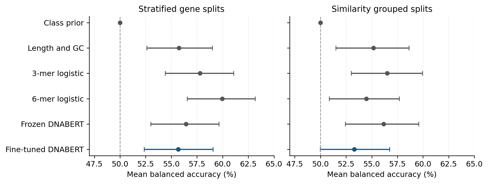

COMPUTATIONAL BIOLOGY · RESEARCH NOTE 01
Does a DNA language model beat simple sequence features?
An auditable benchmark of oncogene and tumor suppressor classification from complete coding DNA sequences.
THE FINDING
Fine-tuning did not establish an advantage.
Under a fixed, short training protocol, fine-tuned DNABERT scored below the simple DNA-pattern baselines on average. The paired uncertainty intervals did not establish a clear balanced-accuracy difference. This is a result about the tested workflow, not a claim that DNA language models cannot work.
- 809
- genes
- 40
- fresh neural fits
- 2
- split settings
- 2,000
- paired bootstrap draws
RESULTS
A fair test starts with strong baselines.
Each gene received one held-out prediction in each setting. Balanced accuracy gives equal weight to identifying oncogenes and tumor suppressors; 50% is the constant-predictor reference.
| Method | Stratified genes | Similarity grouped |
|---|---|---|
| Class prior | 50.00%50.00–50.00 | 50.00%50.00–50.00 |
| Length and GC | 55.75%52.60–58.98 | 55.18%51.51–58.62 |
| 3-mer logistic regression | 57.79%54.41–61.08 | 56.50%53.01–59.94 |
| 6-mer logistic regression | 59.95%56.54–63.17 | 54.47%50.87–57.68 |
| Frozen DNABERT | 56.44%52.99–59.63 | 56.16%52.43–59.57 |
| Fine-tuned DNABERT | 55.68%52.34–59.05 | 53.31%49.98–56.74 |

On grouped splits, fine-tuning minus 3-mer performance was −3.19 percentage points (95% interval −7.02 to +0.53). The interval includes zero. Neither superiority nor equivalence is established.
DESIGN
Hold out genes, and then hold out their relatives.
Stratified gene splits
Keep class proportions balanced while holding out individual genes. Related genes can still appear in training and testing.
Similarity-grouped splits
Keep detected protein-homology components together. This tests transfer beyond those recorded groups, without claiming that all biological relationships have been removed.
Both settings used five outer folds and three inner folds. Scaling, regularization, class weights, epochs, and decision thresholds were fitted or selected within training and inner validation. The 4,389 DNA windows stayed with their parent genes and pooled into gene-level predictions.
The completed evidence audit checked artifact hashes, saved training boundaries, group isolation, class weights, and prediction consistency. Mean fold balanced accuracy was recalculated independently from the saved predictions.
SCOPE
What these results can tell us.
The cohort contains 441 oncogenes and 368 tumor suppressor genes from audited historical COSMIC and OncoKB exports. Dual-role and unresolved annotations were excluded. Original source release dates could not be established.
Fine-tuning tested one learning rate, one seed, and a two-epoch inner budget. Logistic models tested three regularization values. These are comparisons of the specified workflows, not equally optimized model families. No external clinical validation was performed.
The work does not predict a person’s cancer risk, diagnose disease, or determine the effect of a particular mutation. The paired promoter and genomic-input experiments remain future work.
READ THE WORK
Methods, evidence, and limitations.
The complete 20-page manuscript includes the label audit, sequence policy, nested evaluation design, leakage controls, uncertainty-aware results, limitations, reproducibility details, 12 tables, and three figures. It is an AI-assisted working draft with pending author declarations, not an accepted publication.
Gene-level source exports, model weights, and the full results ZIP are not redistributed here. The code repository contains the reference evaluation work; the completed local run and launcher do not yet have a permanent public reproducibility release.
CREDIT AND REUSE
Built on research from others.
© 2026 Zelun He. Rights reserved in original human-authored contributions and original selection and arrangement, where protected. Third-party materials retain their respective rights. No exclusive rights are claimed in scientific facts, database contents, or purely AI-generated material.
Scientific results can be cited. This notice does not create ownership over facts, grant new rights to third-party data or models, or replace their licenses. No Creative Commons license is granted by this page. Third-party names identify research resources and do not imply endorsement.
- DNABERT — Ji et al., Bioinformatics, 2021. The pretrained representation used in the benchmark.
- COSMIC Cancer Gene Census — Sondka et al., 2018. Historical cancer-role annotation source. COSMIC terms.
- OncoKB — Chakravarty et al., 2017. Historical cancer-role annotation source. OncoKB terms.
- Ensembl and MANE. Reference annotation and transcript selection.
- SpanSeq — Ferrer Florensa et al., 2024. Motivation for similarity-aware evaluation; its executable was not used.
- MMseqs2 — Steinegger and Söding, 2017. Protein-alignment software used to define groups.
Suggested citation
He, Z. (2026). Nested evaluation of coding sequence models for oncogene and tumor suppressor classification. Working manuscript, version 2, 28 October 2026. Zelun He personal website. Not peer reviewed.
This study and its manuscript used generative AI assistance for software development, analysis support, and drafting. Authorship and contributor statements remain provisional until confirmed by the researcher.